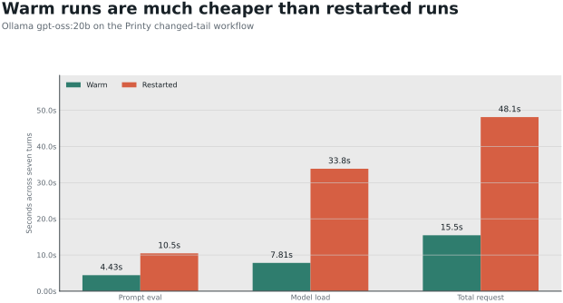
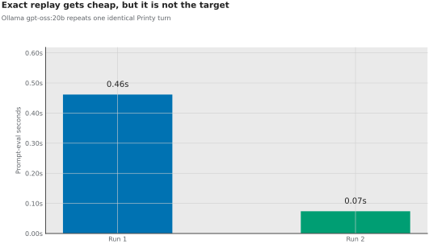
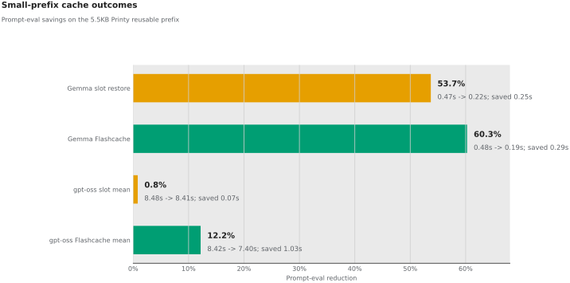
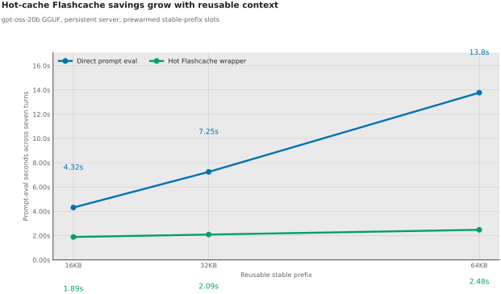
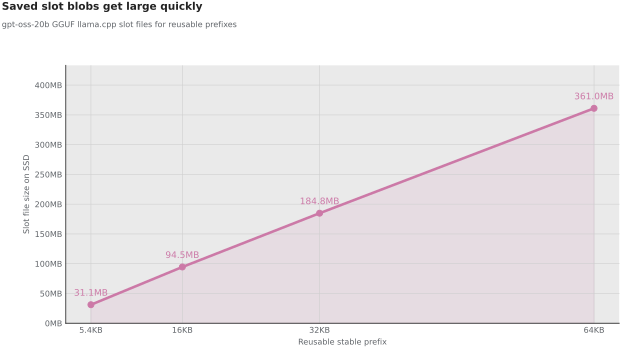
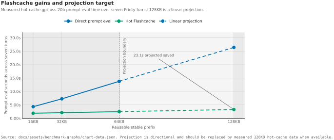

2026-06-03 / DushyantPC benchmark brief
Flashcache is becoming an evidence machine.
These graphs show what we have learned so far about SSD-backed prompt and KV state for local agent workloads. The short version: warm-state reuse matters, exact replay is boring, whole-slot blobs are too blunt, and larger stable prefixes make the Flashcache path more interesting.
The project claim is not prompt caching works. The claim we are testing is whether persistent SSD-backed inference state can become a practical memory tier for ordinary local-agent machines.
Warm state is the first real opening.
Ollama already gets cheaper when the model remains warm. Restarting loses that benefit. Flashcache should aim to preserve the useful part of this state across cold sessions and changed-tail turns.

Warm sequence: 4.43s. Restarted sequence: 10.46s.
Warm total: 15.46s. Restarted total: 48.11s.
There is a real persistence gap worth targeting with SSD-backed state.
Exact replay is cheap, but not enough.
The second identical Ollama prompt dropped from about 462ms prompt eval to 74ms. That proves the known primitive. Our target is harder: repeated stable prefix, changing volatile tail.

The first fixture is mixed, which is useful.
With a 5.5KB reusable prefix, the tiny model shows a big cache win. The larger `gpt-oss-20b` direct slot restore is basically flat, while the Flashcache wrapper gives a repeatable mean win around 12%.

Slot restore saved 53.7%. Flashcache saved 60.3%.
Direct whole-slot restore averaged only 0.8% savings.
Flashcache averaged 12.2% savings across repeated runs.
Bigger reusable context makes the direction clearer.
The percentage win stays near 13%, but the absolute saved time grows as the stable prefix gets larger. This looks more like real local coding-agent context: repo state, tools, instructions, memory, and a small changing tail.

| Reusable prefix | Direct prompt eval | Flashcache prompt eval | Saved |
|---|---|---|---|
| 16KB | 19.81s | 17.09s | 2.71s |
| 32KB | 38.62s | 33.68s | 4.94s |
| 64KB | 81.95s | 70.56s | 11.39s |
Whole-slot blobs are too blunt for the final system.
Slot files grow quickly. That does not kill the idea, but it tells us where the next layer needs to go: block layout, partial restore, cache eviction, and I/O telemetry.

| Reusable prefix | Slot file |
|---|---|
| 5.4KB | 31.1MB |
| 16.0KB | 94.5MB |
| 32.0KB | 184.8MB |
| 64.0KB | 361.0MB |
The next target is lower than the wrapper line.
This figure combines measured 16KB, 32KB, and 64KB results with a directional 128KB trend projection. The metal target is intentionally separate: it is the experiment we want to earn with partial KV restore, prefetch, and better layout.

Now measure the boundary, not just the outcome.
The current charts justify going deeper. The next charts should break time apart so we can see whether the bottleneck is prefill compute, save/restore, SSD throughput, memory copy, GPU upload, or tail processing.